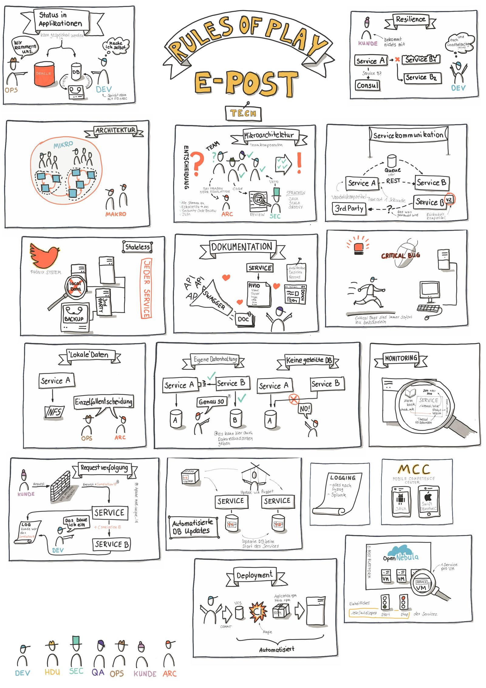

Why you need a macro architecture
Eberhard Wolff on LinkedIn asked recently: ‘What was the biggest mistake you witnessed or did?’ (in software architecture).
The one thing which came to my mind is that at one point we did not have a shared understanding how we should build our system back when I was working at DHL E-POST. This was in ~ 2014. We split the monolith in multiple services. Every team (we had 10 teams) was doing it how they thought it would be good. Turns out the overall system was harder to use, full of surprises in the APIs (REST) and had different concepts when operating. Documentation was hard to find and different stakeholders had different ideas how things should be done.
So we decided what is important in such a system. The main points for us to handle was:
- State in applications (only DB, no local data, phoenix system)
- Resilience (Loadbalancing, Consul)
- Service communication (REST)
- Documentation (Swagger, Pivio)
- No shared databases between services
- Request tracking (defined correlation ID)
- Monitoring (Alarm books, health endpoints)
- Logging (all to Splunk via syslog, Logformat)
- How deployment is done, automated DB updates
- Operations (1 VM per service in OpenNebula)
The only ‘restriction’ we had for teams in terms of how they write the service was the use of Java. If they wanted to switch they had to talk to the leadership team first. How the service is written, what the services does internally was left to decide to the teams. The main influence on their daily business was that they have to have meaningful documentation (e.g. Swagger, ADRs) and that they should be able to fix critical bugs immediately.
Most of the other rules had the goal to make it easier to run in production, to make it easier to find bugs, to track requests. Since our main way of communicating between service, we even did our own version of the Zalando RESTful API Guidelines. This brought a lot of unification and shared understanding to all developers on how to develop REST service and not getting confused when consuming services.
So we had to bring everybody together and get alignment how and what we should do. Every team send one person in a working group, we exchanged ideas, concepts and ways of implementing. Out of that we got our ‘Rules of Play’. Since this was way before Corona and we were all in the office, I drew up a poster and put it in a few places in the office. This way and always repeating and insisting on it in meetings made our transition possible. Step by step, along user stories, the system changed and made it easier to use.
Lots of these things are much easier to use today in off the shelf cloud systems. Yet, I see people sshing into kubernetes nodes to fix things manually, see log files in different formats and not having any documentation.
If you have a few development teams and you are creating a distributed system, please make sure you have some guidelines to make the overall system easier to program, use and trace/debug. You need it.
What did you put into your macro architecture? Happy to discuss. Contact me via LinkedIn.
